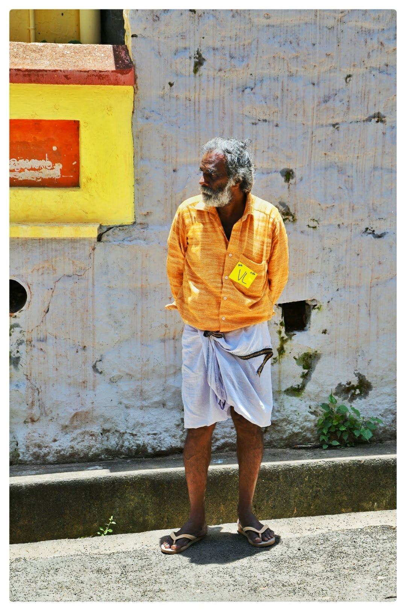
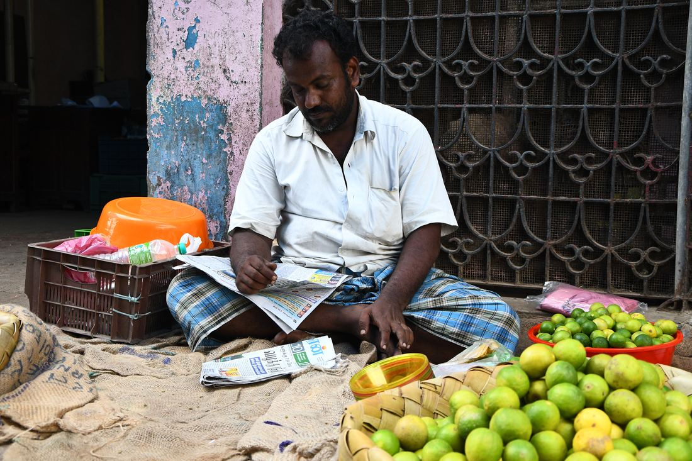

ANANTHU DEV D V
PROJECT ENGINEER — AEROSPACE & DEFENCE
▌
I build mission-critical onboard software for precision-guided aerospace and defence systems — flight software sequencing, Guidance, Navigation & Control, embedded real-time execution, simulation and verification. I enjoy turning algorithms and system architectures into dependable real-world flight code.
ONBOARD FLIGHT SOFTWARE & SEQUENCER
I develop onboard flight software in C for precision-guided projectile defence systems, focused on embedded execution, real-time behaviour and mission-critical reliability. I designed, architected and implemented the Flight Software Sequencer — the component that owns mission sequencing, subsystem coordination, execution flow and state-transition management from power-on to end of mission.
- Mission sequencing & state-transition management
- Subsystem coordination and execution-flow control
- Embedded deployment · real-time execution frameworks
- Software architecture documents & technical flowcharts
GNC — FROM ALGORITHM TO FLIGHT CODE
I developed the software architecture for onboard Guidance — translating algorithmic models into operational flight software modules and designing their execution frameworks for embedded deployment. I integrated Guidance, Navigation & Control subsystems into the overall flight software architecture and supported system-level verification, validation and hardware integration.
- Guidance algorithm → operational flight software translation
- GNC subsystem integration into flight architecture
- Execution frameworks for embedded targets
- Support for system-level V&V and hardware integration
ORBITS, TRAJECTORIES & MODEL-IN-THE-LOOP
I have contributed to satellite mission simulation and Model-in-the-Loop (MIL) development — orbit determination, numerical propagation, reference-frame transformations, simulation framework development, automated testing and system-level validation for space applications.
Previously I led development of ASTRA GUI, a mission-planning and trajectory-optimization platform built with Electron.js on a high-performance C++ simulation backend — contributing to both the frontend and backend optimization workflows.
- Orbit determination · numerical propagation · frame transforms
- MIL simulation frameworks & automated testing
- Trajectory optimization tooling (Electron.js + C++)
TOOLS THAT MAKE TESTING FASTER
Beyond flight code, I build Python applications for sensor-data verification, telemetry analysis and subsystem validation — letting engineering teams analyse hardware performance and flight-test data quickly instead of wrestling with raw logs.
- Sensor-data verification & telemetry analysis apps (Python / Tkinter)
- Subsystem validation & flight-test data workflows
VERIFICATION, VALIDATION & HARDWARE INTEGRATION
Flight software only counts when it survives contact with hardware. I participate in software debugging, telemetry analysis, hardware integration, milestone reviews and end-to-end testing — plus the architecture documents, validation reports and engineering documentation that keep a mission-critical program auditable.
- MODEL
- MIL
- SIL
- HIL
- FLIGHT TEST
- Software integration, verification & validation
- Hardware-in-loop testing & debugging
- Validation reports, subsystem documentation, milestone reviews
- Cross-discipline work with Guidance, Nav, Control, SW & HW teams
LANGUAGES & SYSTEMS
ASSET VIEWER
Generic, illustrative airframes — drag to orbit the camera.
OFF-DUTY OPTICS
Frames from my camera, off the clock.





ESTABLISH UPLINK
Open to conversations about flight software, GNC, simulation and defence technology.
STATION: TRIVANDRUM · KERALA · INDIA